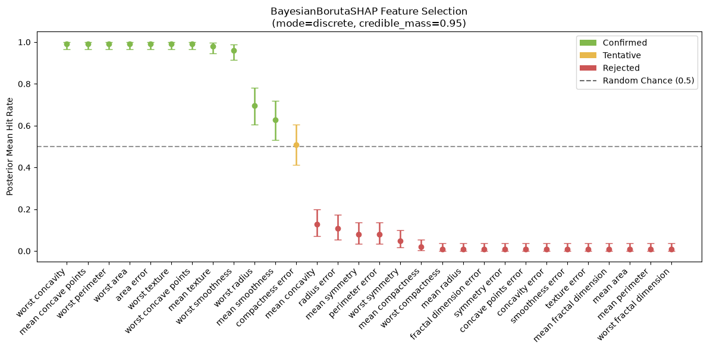
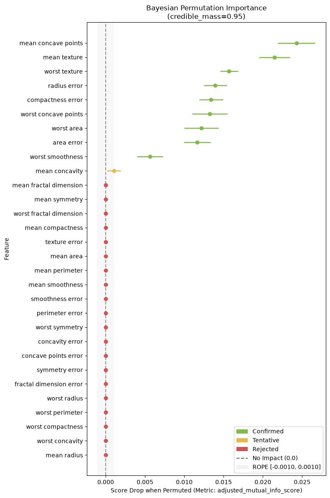
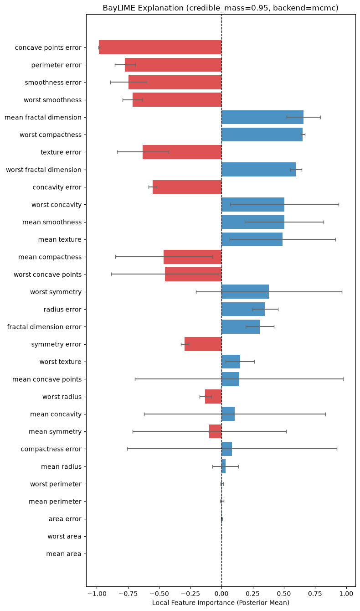
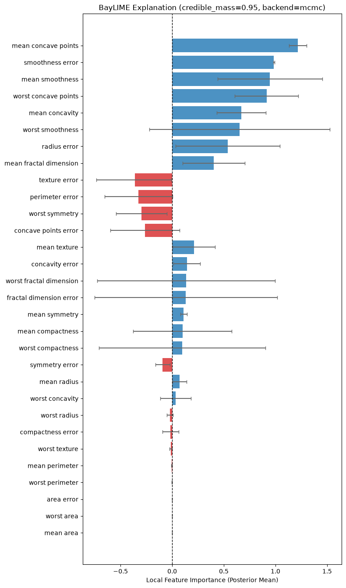
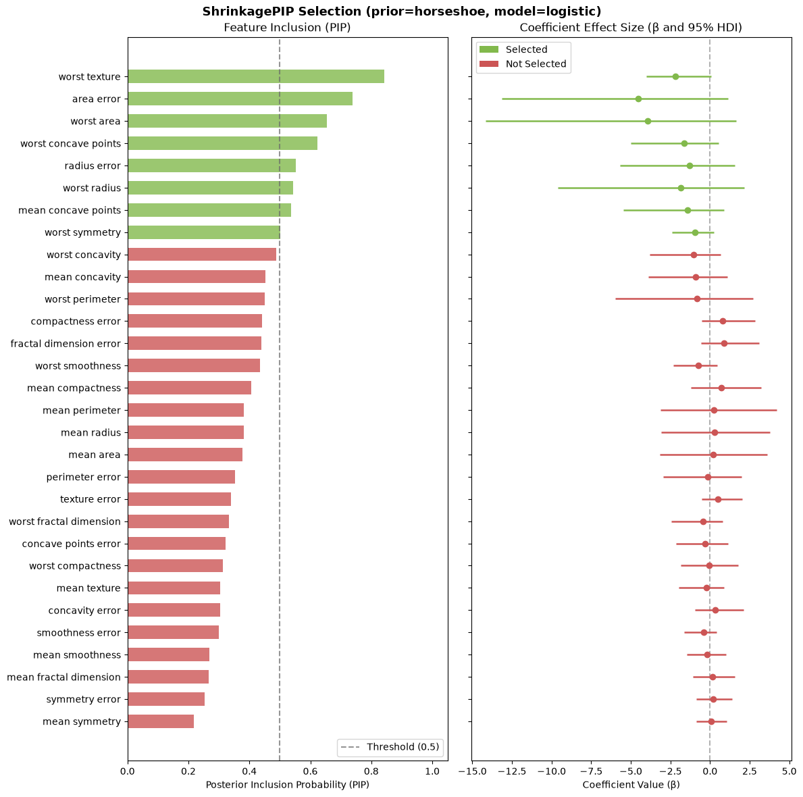
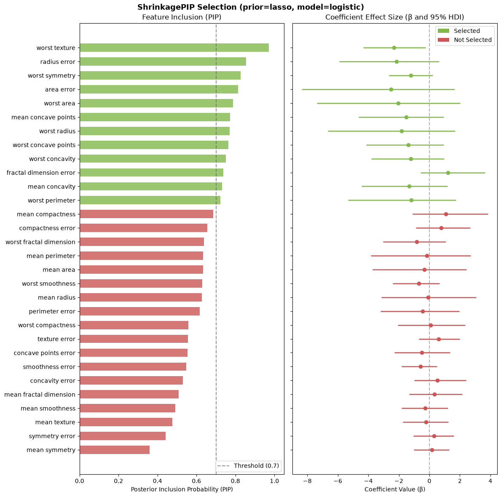
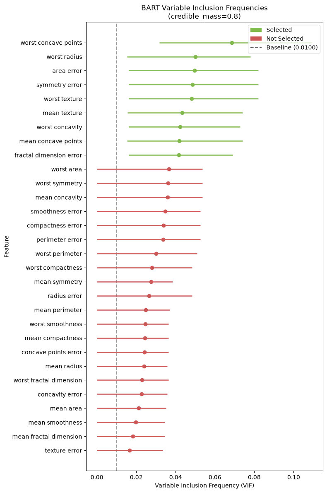
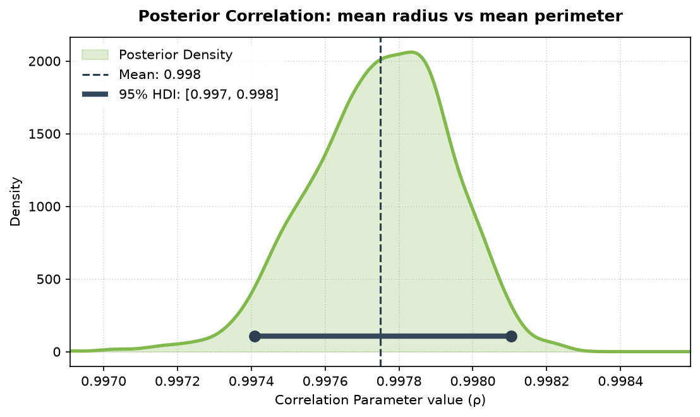
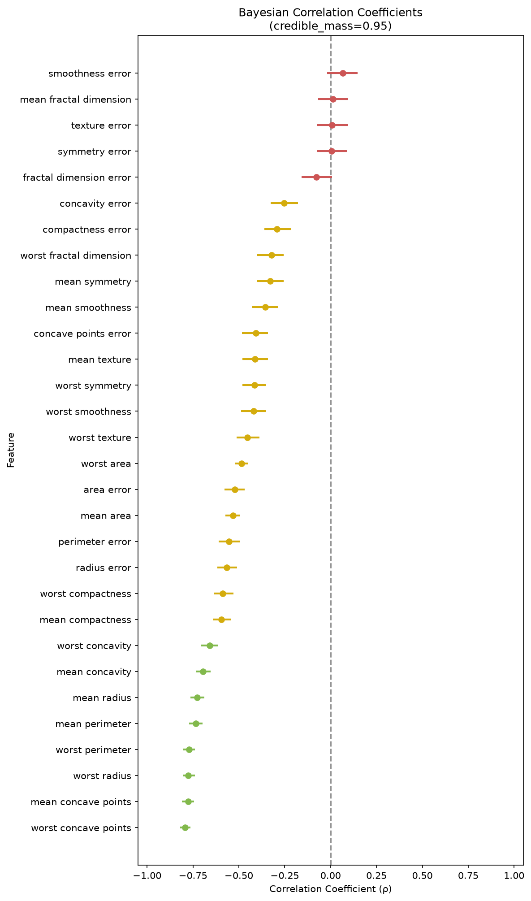

Bringing Bayesian Rigor to XAI
Feature selection and local model interpretability are critical tasks in modern machine learning; however, standard tools often fall short in statistical rigor. Algorithms like LIME are notorious for local instability; repeated explanations on the same instance can return conflicting results. Meanwhile, wrapper methods like Boruta rely heavily on frequentist p-values, which do not scale well over hundreds of feature-subsampling iterations.
To resolve these issues, I designed and developed bxai (available on PyPI as bxai). My goal was to build a comprehensive suite that leverages Bayesian updating to make feature selection and explanation both stable and mathematically sound. By using closed-form conjugate updates where the prior and likelihood structures align, and delegating to PyMC MCMC sampling only when complex modeling (like heteroscedastic noise or Horseshoe shrinkage) is required, the library balances computational speed with statistical depth.
In this post, I walk through how to apply the complete model suite on the classic Wisconsin Breast Cancer dataset, illustrating the implementation details, the new visualization methods, and the modeling improvements, including a Region of Practical Equivalence (ROPE) on model-agnostic permutation selection.
1. Conjugate Bayesian Trackers (The Math Under the Hood)
Rather than running heavy Markov Chain Monte Carlo (MCMC) simulations at every iteration of a wrapper loop, I implemented stateful, closed-form conjugate trackers. These mathematical engines update feature state variables in milliseconds.
Discrete Engine: Beta-Binomial Tracker
When tracking binary hits (e.g., whether an active feature outperforms a shadow feature), I model the probability of a hit \(\theta_j\) for feature \(j\) using a Beta prior. The posterior updates analytically upon receiving binary counts:
This allows me to evaluate the exceedance probability \(P(\theta_j > 0.5 \mid \text{data})\) using the Beta survival function (the complementary CDF). If this probability crosses a threshold (like 0.95), the feature is confirmed; if it drops below a floor (like 0.05), it is rejected.
Continuous Engine: Normal-Inverse-Gamma (NIG) Tracker
When modeling continuous values (such as differences in SHAP values or validation loss changes), I assume the observations are normally distributed with an unknown mean and variance: \(X \sim \text{Normal}(\mu, \sigma^2)\). I place a conjugate joint prior over the parameters:
For a batch of \(n\) new data points with sample mean \(\bar{x}\) and sum of squared differences \(SS\), the state variables update in closed-form:
The marginal posterior distribution of the mean \(\mu\) resolves to a Student-t distribution:
By extracting the Highest Density Interval (HDI) or the Equal-Tailed Credible Interval (ETI) from this Student-t distribution, I make feature selection decisions. A feature is confirmed if the interval is completely above zero, and rejected if it is completely below zero.
2. Global Non-Linear Selection
BayesianBorutaSHAP
Boruta is a classic algorithm that generates "shadow features" by shuffling columns, training a model, and determining if active features outperform the best noise feature. Instead of performing frequentist binomial tests on cumulative counts, BayesianBorutaSHAP feeds these evaluations to the trackers.
It supports a discrete mode (Beta-Binomial) and a continuous mode (NIG tracker analyzing the exact SHAP difference). To make it highly efficient, I implemented dynamic pruning. As soon as a feature is confirmed or rejected, it is removed from subsequent iterations, drastically reducing training times.
Below, I fit BayesianBorutaSHAP on the breast cancer dataset using a LightGBM classifier. We track binary hits against the shadow features over 100 iterations:
import lightgbm as lgb
from bxai.selection import BayesianBorutaSHAP
# Fit Bayesian BorutaSHAP in discrete mode on Breast Cancer dataset
clf = lgb.LGBMClassifier(random_state=42, verbose=-1)
selector = BayesianBorutaSHAP(
model=clf,
mode="discrete",
max_iter=100,
confirm_threshold=0.95,
reject_threshold=0.05,
early_stopping=False,
random_state=42,
)
selector.fit(X, y)
print("Confirmed Features:", selector.confirmed_)
fig = selector.plot()
BayesianPermutation with ROPE
This is a model-agnostic feature selection tool. It shuffles columns on a validation set and measures the resulting drop in score (or increase in loss) across multiple repeats. I integrated a continuous Student-t update engine here. A key design choice I made was computing the baseline score inside the repeat loop rather than hoisting it outside. This ensures that stochastic scorers (like those using subsampled ensembles) contribute matching noise profiles to both the baseline and permuted runs, avoiding systematic bias.
Also notably, I implemented a Region of Practical Equivalence (ROPE). Often, a feature may be statistically important, but its impact on the model's score is negligible (e.g., less than 0.001 increase in Adjusted Mutual Information). The ROPE parameter allows a practitioner to define a threshold where any score changes inside this interval are treated as practically zero. The decision logic works as follows:
- Confirmed: The entire credible interval of the score drop is strictly above the upper boundary of the ROPE (\(lower > rope\_upper\)).
- Rejected: The entire credible interval is contained within the ROPE (\(lower \ge rope\_lower\) and \(upper \le rope\_upper\)), or the entire interval is completely below the lower boundary of the ROPE (\(upper < rope\_lower\)).
- Tentative: The credible interval overlaps any boundary of the ROPE, indicating that more iterations are needed to narrow the posterior variance.
from sklearn.ensemble import RandomForestClassifier
from bxai.selection import BayesianPermutation
# Fit base RandomForest classifier
clf_perm = RandomForestClassifier(random_state=42, verbose=0).fit(X.values, y)
# Permutation feature selection with parallel jobs and a ROPE of [-0.001, 0.001]
selector_perm = BayesianPermutation(
model=clf_perm,
scoring="adjusted_mutual_info_score",
n_repeats=100,
n_jobs=4,
random_state=42,
rope=(-0.001, 0.001),
)
selector_perm.fit(X, y)
print("Confirmed Features:", selector_perm.confirmed_)
fig = selector_perm.plot(max_features=None)
3. Local Interpretability: BayLIME
Fitting a local surrogate model on perturbed inputs is a classic way to explain a single prediction. BayLIME implements the Bayesian formulation of this surrogate, allowing me to inject prior beliefs directly. The package supports two backends:
- Analytical Backend (Default): Solves a closed-form weighted Bayesian linear regression. This is incredibly fast and operates under standard homoscedastic Gaussian assumptions.
- MCMC Backend: Builds a full PyMC model. Instead of flat variance, it uses a heteroscedastic noise structure where the observation standard deviation is scaled by the perturbation proximity weights: \(\sigma_i = \sigma_{global} / \sqrt{w_i}\). This matches the geometric intuition that perturbations closer to the explained instance should constrain the linear surrogate much more tightly than distant ones. It also supports a sparsity-inducing Horseshoe prior to drop irrelevant features.
A major design goal of BayLIME is using global prior information to make local explanations stable. Here, I show the difference between explaining a single breast cancer instance with a flat prior versus seeding the explainer with global SHAP importances obtained from BayesianBorutaSHAP:
from bxai.explanation import BayLIME
import lightgbm as lgb
clf = lgb.LGBMClassifier(random_state=42, verbose=-1).fit(X, y)
# Explaining with MCMC backend and flat priors
explainer_flat = BayLIME(training_data=X, feature_names=list(X.columns), backend="mcmc")
explanation_flat = explainer_flat.explain_instance(
instance=X.iloc[0].values, predict_fn=clf.predict_proba
)
fig_flat = explanation_flat.plot(max_features=None)
Now, I seed the prior mean of the surrogate coefficients using the global importances from BayesianBorutaSHAP. This stabilizes the local regression, ensuring it is grounded in the model's global logic:
# Seeding BayLIME with global SHAP importances
explainer_prior = BayLIME(
training_data=X,
feature_names=list(X.columns),
prior_mean=selector.feature_importances_,
prior_precision=1.0,
backend="mcmc",
)
explanation_prior = explainer_prior.explain_instance(
instance=X.iloc[0].values, predict_fn=clf.predict_proba
)
fig_prior = explanation_prior.plot(max_features=None)
4. Parametric Bayesian Importance
ShrinkagePIP (Horseshoe & Lasso GLMs)
For high-dimensional generalized linear models, I built ShrinkagePIP. It places either a Horseshoe or Lasso regularizing prior on the coefficients using PyMC and tracks their Posterior Inclusion Probabilities (PIP).
For the Horseshoe prior, I implemented a kappa-based selection method. Standard thresholding (checking if a coefficient is greater than an epsilon) is statistically flawed for continuous shrinkage distributions, because the posterior will almost always have some support away from zero. Instead, I calculate PIP using the posterior shrinkage factor \(\kappa_j\):
Here, \(\kappa_j \approx 0\) represents complete inclusion (no shrinkage, local scale dominates), and \(\kappa_j \approx 1\) represents complete shrinkage to zero. The PIP is computed as the probability that \(\kappa_j < 0.5\). For Lasso priors, the package automatically defaults to scale-aware epsilon thresholding. Below, I compare both priors on the scaled breast cancer dataset:
from sklearn.preprocessing import StandardScaler
from bxai.parametric import ShrinkagePIP
scaler = StandardScaler()
X_scaled = pd.DataFrame(scaler.fit_transform(X), columns=X.columns)
# Horseshoe prior using kappa-based PIP
selector_hs = ShrinkagePIP(
model_type="logistic",
prior="horseshoe",
kappa_threshold=0.5,
pip_threshold=0.50,
n_samples=1000,
chains=4,
random_state=42,
)
selector_hs.fit(X_scaled, y)
fig_hs = selector_hs.plot(max_features=None)
# Lasso prior using epsilon thresholding
selector_lasso = ShrinkagePIP(
model_type="logistic",
prior="lasso",
pip_threshold=0.50,
n_samples=1000,
chains=4,
random_state=42,
)
selector_lasso.fit(X_scaled, y)
fig_lasso = selector_lasso.plot(max_features=None)
BARTImportance
Bayesian Additive Regression Trees (BART) are powerful non-parametric models. The BARTImportance class fits a BART model via pymc-bart. During sampling, the trees write their split counts to a compact, base64-encoded byte array inside PyMC. I wrote a custom bit-shifting decoder to unpack this binary stream and extract the posterior distribution of Variable Inclusion Frequencies (VIF) for each draw. Features are selected if the lower boundary of their Highest Density Interval (HDI) exceeds a baseline random-chance frequency (\(1/n_{features}\)).
from bxai.parametric import BARTImportance
# Fit BART Importance for classification (using 50 trees)
bart_clf = BARTImportance(
model_type="classification",
n_trees=50,
n_samples=1000,
tune=1000,
chains=4,
random_state=42
)
bart_clf.fit(X, y)
print("Selected features (BART):", bart_clf.confirmed_)
fig_bart = bart_clf.plot(max_features=None)
BayesianCorrelation
Evaluating feature relationships through correlation is standard practice; however, standard correlation coefficients are point estimates that lack any representation of uncertainty. BayesianCorrelation solves this by framing correlation coefficient estimation as a parametric Bayesian inference problem in PyMC, producing the full posterior distribution of Pearson's \(r\), Spearman's \(\rho\), or Kendall's \(\tau\).
The estimator supports two modeling frameworks:
- Quick Backend (Default for Pearson/Spearman): Fits a standard bivariate normal model. For Spearman's rank correlation, it fits the model on the ranks of the data.
- Latent Copula Backend (Required for Kendall, Optional for Spearman): Maps the ranks of the variables to standard normal scores (using the probit-transform of the empirical cumulative distribution function) and fits a bivariate normal model on these latent scores. Greiner's relations are then applied to map the latent correlation parameter back to Spearman's \(\rho\) or Kendall's \(\tau\).
I also implemented an adaptive plot() method that changes style based on input type. For bivariate single-feature correlation, it renders a smooth KDE distribution plot of the correlation samples with a 95% Highest Density Interval (HDI) bar. For multivariate correlations (correlating multiple features against a single target), it renders a forest-style interval line plot, color-coded by statistical significance guidelines (green for positive correlation, red for negative correlation, and gray for intervals that overlap zero).
Bivariate Correlation Example
Below, I estimate the Pearson correlation between mean radius and mean perimeter. Because radius and perimeter are geometrically coupled, we expect a strong positive correlation:
from bxai.parametric import BayesianCorrelation
# Pearson correlation between two features
model = BayesianCorrelation(
method="pearson",
backend="quick",
chains=2,
cores=1,
random_state=42
)
model.fit(X["mean radius"], X["mean perimeter"])
# Print summary metrics including Posterior Mean and Strength classification
print(model.summary()[["Feature 1", "Feature 2", "Posterior Mean", "95% HDI Lower", "95% HDI Upper", "Strength"]])
fig = model.plot()
Multivariate Correlation Example
To analyze the linear relationship between all dataset features and the target variable (malignancy diagnosis), I fit a multivariate Pearson correlation. The forest plot displays the posterior mean and HDI interval for each feature, color-coded by direction and magnitude:
# Correlation of multiple features against the target variable
model_multi = BayesianCorrelation(
method="pearson",
backend="quick",
chains=2,
cores=1,
random_state=42
)
model_multi.fit(X, y)
print(model_multi.summary()[["Feature", "Target", "Posterior Mean", "Strength"]])
fig_multi = model_multi.plot()
Practitioner's Guide: When to Use Which Model?
With six distinct modeling components, bxai allows practitioners to trade off computational complexity against statistical depth. The following table provides a guide for choosing the correct tool for your dataset and model archetype:
| Model Name | Statistical Basis | Computational Cost | Primary Use Case | When to Reach for It |
|---|---|---|---|---|
| BayesianBorutaSHAP | Discrete (Beta-Binomial) or Continuous (Normal-Inverse-Gamma) trackers over tree-based SHAP margins. | Medium (optimized via dynamic feature pruning). | Global non-linear feature selection. | When you use GBDT ensembles (LightGBM/XGBoost) and want to isolate active features from shadow noise without frequentist p-value instability. |
| BayesianPermutation | Normal-Inverse-Gamma tracker evaluating validation metric drops under a continuous Student-t distribution. | Low-Medium (requires model predictions but no retraining). | Model-agnostic global selection. | When using arbitrary models (SVMs, Neural Networks) and custom metrics. Reach for it specifically when using a ROPE to ignore negligible effects. |
| BayLIME | Weighted Bayesian linear surrogate with MCMC heteroscedastic noise and sparsity (Horseshoe) priors. | Analytical: Extremely Low (ms). MCMC: High (seconds to minutes). | Single-prediction local explainability. | When you need stable, reproducible local attributions. Use the MCMC backend to model weight-scaled observation noise and pass global SHAP priors. |
| ShrinkagePIP | Parametric GLM using PyMC MCMC with regularizing Horseshoe or Lasso priors to estimate posterior inclusion probabilities. | High (requires full MCMC sampling). | Linear/Logistic GLM variable selection. | When fitting parametric models and seeking to enforce sparse, interpretable coefficients while avoiding the bias of stepwise regression. |
| BARTImportance | Variable Inclusion Frequencies (VIF) posterior estimation from Bayesian Additive Regression Trees. | High (requires full MCMC sampling of BART trees). | Native non-linear Bayesian selection. | When you want to build a native non-linear Bayesian ensemble (BART) and select features directly using posterior credible intervals of tree splits. |
| BayesianCorrelation | MCMC posterior estimation of Pearson's \(r\), Spearman's \(\rho\), or Kendall's \(\tau\) using bivariate normal models or latent copulas. | Medium (requires PyMC MCMC sampling for correlation distributions). | Parametric correlation estimation. | When you need to measure the linear or rank relationship between features and targets, and want to verify correlation strength using full posterior credible intervals instead of standard frequentist p-values. |
Summary: Matching Computational Cost to Statistical Necessity
By bringing these diverse components under a unified interface, bxai makes it easy to apply Bayesian reasoning to every stage of a machine learning workflow. If you need fast filter selections, the conjugate engines run in seconds. If you require deep, non-linear local attribution, the MCMC-backed BayLIME models proximity and sparsity with rigorous uncertainty bounds. The package represents my attempt to build a stable, robust, and mathematically grounded toolkit for explainable AI.